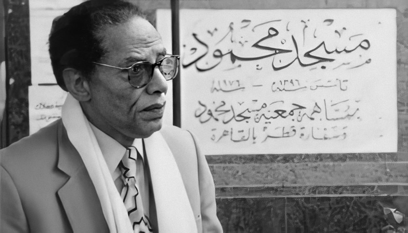

لماذا المحمود...؟
-أثّر مصطفى محمود في قلوب الملايين من قرائه و متابعيه لما أبدى من أهتمام في تغيير وضع بلاده الغالية على قلبه مصر وأهم من ذلك وضع بلاد العربية لا بل الإسلامية أجمع، فكانت رسالته هي رسالة توحيد و عمل و جّد، رسالة زحف وراء ماضي المسلمين الذي هو مجرد ذكريات الأن ولكن ليس كتذكّر و َتحَسُّر بل بدعوة رصينة للنهضة بأنفسنا و القفز على عجلة الحياة
و لعل جُل عمل مصطفى كان يُمثلُ بقوله عندما كان يقول في ختام حلقة ما من برنامج العلم و الإيمان خاصته حيث كان يقول: "و ياريت أكون أنا قدرت من خلال الحلقة دي إني أوصل الفكرة اللي كانت حابب أوصلها" فذلك كان جُل مراده، أن يُوصل فكرة
- عام ١٩٩٤، الجريدة الألمانية "Die Zeit" [١] أعتبرت إنجازات مصطفى محمود بنفس مكانة الكاتب الألماني "Heinz G. Konsali" [٢] و مقدم البرامج التيلفزيونة الألماني "Robert Lembke" [٣]
و في عام ١٩٩٥ فاز بجائزة التقدير المصرية، و كما أن تم تسميت ميدان[٤] بإسمه في القاهرة، مصر.
![[٤]](https://commons.wikimedia.org/wiki/File:Mostafa_Mahmoud_Mosque.jpg){kind=link}
في عام ٢٠٠٩، تم أكتشاف كويكب من قبل عالم فلك هاوي روسي "Timur Kryachko" في المحطة زيلينشاكسكايا وتم تسميته بأسمه تخليداً لذكراه و تم الأعتراف بالأسم رسمياً عام ٢٠٠٤ من قبل منظمة مركز الكواكب الصغيرة [٥] [٦]
- تمت إستضافت مصطفى و دعوتهُ عدة مرات من قبل محافل إسلامية من عدة دول عربية للإّتناس بنزلتهِ الطيبة و للإستماع إليه
وجهاً لوجه كما أنه كان قد كُرم أدبياً لعدة مرات خلال حياته و بعد موته أيضاً حيث كتب فيه الشاعر السعودي فيصل أكرم
مقالاً في صحيفة الجزيرة عام ٢٠٠٨، و أصدر فيما بعدها عدد من الصحيفة خاص به تماماً من الغلاف إلى الغلاف ضم كتابات
لثلاثين مثقفاً عربياً من محبيه كما ضم العدد أيضاً صوراً خاصة به و كلام بخط يده و كلمات رقيقة و عذبة من إبنته حيث
قالت:
"(قيمة الإنسان هي ما يضيفه إلى الحياة بين ميلاده وموته) تلك الكلمة تمثل مبدأه ومشواره الإنساني، والمقصود بالأمانة
هنا، ليس المجد الأدبي والعلمي والمادي بل العطاء الإنساني لوجه الله تعالى وكل ما يفيد البشر.. أي العطاء والخير
والمساندة للغير فهو إنسان شديد التسامح حتى لمن أساء إليهِ قولاً وفعلاً..بسيط جداً، يحمل قلب طفل يحلم بالعدالة
الاجتماعية وإعلاء كلمة الأمة الإسلامية... و كنت انا أدعي له و أقول: أطال الله عمرك يا أبي ومتعك بالصحة حتى ترى حلمك
يتحقق وهو وحدة الأمة العربية والإسلامية وإعلاء كلمتها لتصبح كما قال الحق في كتابه العزيز {خَيْرَ أُمَّةٍ أُخْرِجَتْ
لِلنَّاسِ}.." وأنهت الكلمات بـوصف نفسها: " إبنته ومرافقته الوحيدة"
- و لماذا المحمود؟ ولماذا هذا الموقع... بالنسبة لي فإني مصطفى هو أب، أخ و حامل شرارة الضوء الوحيد على طرق الظلمات فهو من يهُتدا به في زمننا هذا و عسى أنه أصابَ أكثر مما أخطئ فهو مجرد إنسان عادي في النهاية وليس معصوماً و هو أقر بالكلام ده و نقد النفس من شِيم النبلاء
رحم الله مصطفى محمود و تَقَبَّله قُبولٌ حسن.
